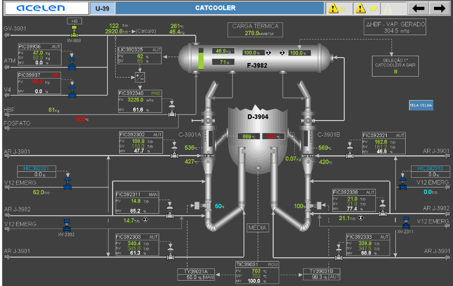

U39 CATCOOLER CONCEPT
Treinamento interativo do sistema Catcooler
Explore os equipamentos, malhas de controle, ar de processo, V-12 de emergência e lógica de segurança diretamente sobre a tela do processo. Clique nas lâmpadas para abrir a explicação técnica e utilize o modo edição para complementar o conteúdo.
Catcooler — clique nas lâmpadas para abrir as explicações
